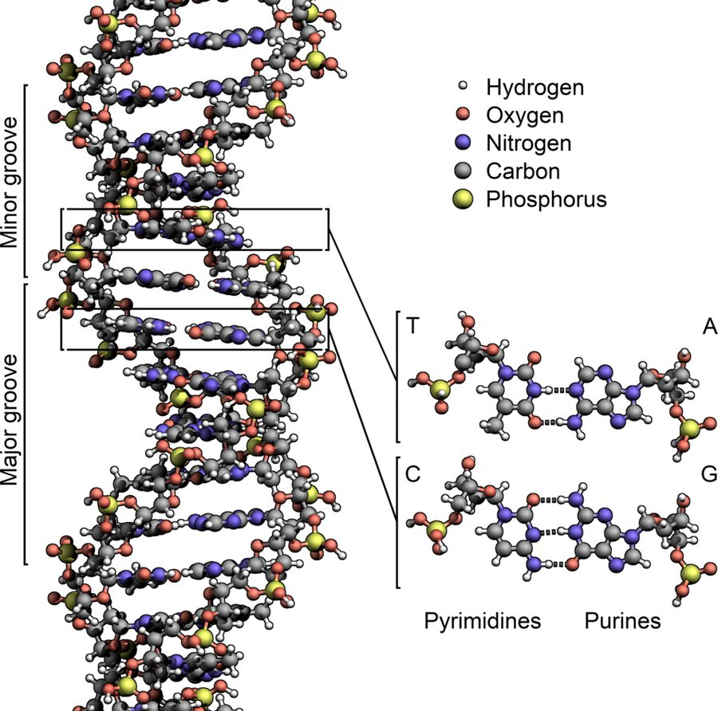

Una receta escrita con cuatro letras
El ADN (ácido desoxirribonucleico) es la molécula que guarda la información hereditaria de casi todos los seres vivos, de una bacteria a una ballena. Funciona como un libro de instrucciones: indica a las células qué proteínas fabricar, cuándo y en qué cantidad.
Ese libro está escrito con un alfabeto de solo cuatro «letras», las bases nitrogenadas:
- A: adenina
- T: timina
- G: guanina
- C: citosina
El orden de esas letras, la secuencia, es lo que contiene la información, igual que el orden de las letras de esta frase le da sentido.
La doble hélice
El ADN está formado por dos hebras enrolladas una sobre otra, como una escalera de caracol: la famosa doble hélice. Los laterales de la escalera son azúcar (desoxirribosa) y fosfato; los peldaños son pares de bases que encajan siempre igual:
- la A se une con la T;
- la G se une con la C.
Esta regla de emparejamiento es la clave de todo. Como cada hebra «predice» a la otra, la célula puede separar las dos y usar cada una como molde para fabricar una copia. Así se duplica el ADN cada vez que una célula se divide.
La estructura la describieron James Watson y Francis Crick en 1953, apoyándose de forma decisiva en las imágenes de difracción de rayos X obtenidas por Rosalind Franklin y Raymond Gosling, y en el trabajo de Maurice Wilkins.
¿Dónde está?
En las células humanas, casi todo el ADN está dentro del núcleo, empaquetado en cromosomas. Una pequeña parte está en las mitocondrias, las centrales de energía de la célula, y se hereda solo por vía materna.
Si se estirara el ADN de una sola célula humana, mediría unos dos metros. Cabe en un núcleo de unas pocas milésimas de milímetro porque se enrolla alrededor de unas proteínas llamadas histonas, como hilo en carretes, y esos carretes se pliegan una y otra vez.
Cifras para situarse
- El genoma humano tiene unos 3.100 millones de pares de bases en cada juego de cromosomas. Como heredamos un juego de cada progenitor, cada célula tiene el doble.
- Contiene unos 20.000 genes que codifican proteínas.
- Menos del 2 % del ADN codifica proteínas. El resto no es «basura»: buena parte regula cuándo y dónde se activan los genes, aunque la función de muchas regiones sigue en estudio.
- Dos personas cualesquiera comparten alrededor del 99,9 % de su secuencia de letras sueltas. Ese 0,1 % restante, unos millones de diferencias, explica parte de nuestra variedad.
ADN y ARN
El ARN (ácido ribonucleico) es un primo cercano del ADN. Suele tener una sola hebra, usa ribosa en lugar de desoxirribosa y cambia la T por U (uracilo). La célula lo usa sobre todo como copia de trabajo de los genes, como verás en De gen a proteína.
Fuentes
- National Human Genome Research Institute (NHGRI). Deoxyribonucleic Acid (DNA) Fact Sheet. genome.gov.
- MedlinePlus Genetics. What is DNA? U.S. National Library of Medicine.
- Watson, J. D. y Crick, F. H. C. (1953). Molecular structure of nucleic acids. Nature, 171, 737–738.
- Franklin, R. E. y Gosling, R. G. (1953). Molecular configuration in sodium thymonucleate. Nature, 171, 740–741.
- Nurk, S. et al. (2022). The complete sequence of a human genome. Science, 376, 44–53.